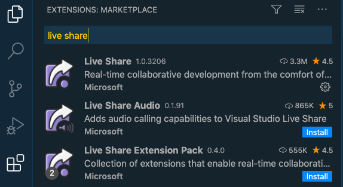
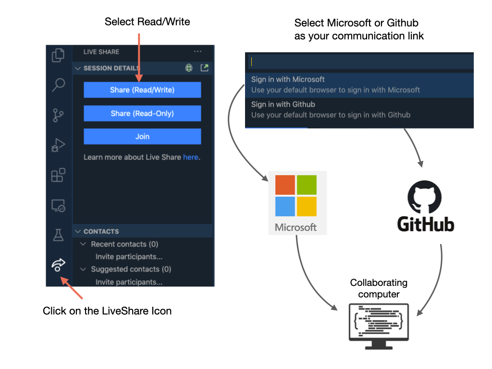
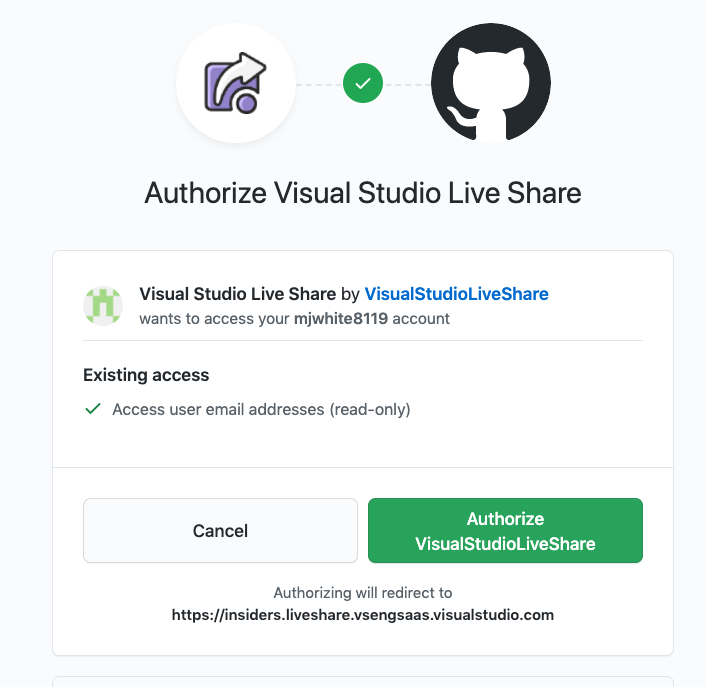
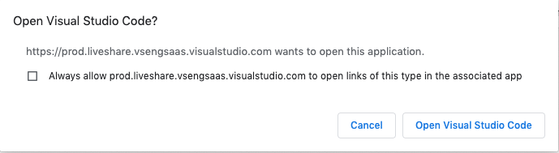
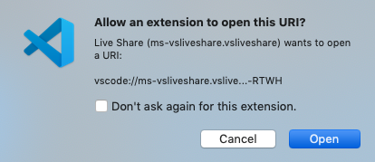
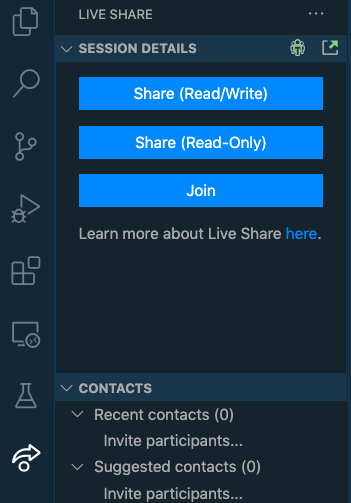
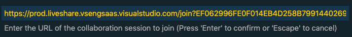
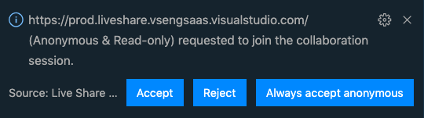
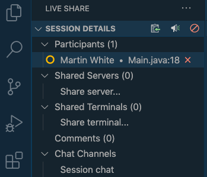

Live Share
VS Code Live Share enables you to quickly collaborate with a friend, classmate, or professor on the same code without the need to sync code or to configure the same development tools, settings, or environment.
Step 1. Install the Live Share Extention

Step 2. Start a Live Share Session
You will be asked to share your Visual Studio screen via either a Microsoft or GitHub account. If you have one of these accounts then pick it. Otherwise you will need to create an account with one of these organizations. Github is also owned by Microsoft.

Step 3. Verify your Account
If you are using Live Share via Github you will be asked to authorize sharing. Click on Authorize VisualStudioLiveShare. You will only need to do this the first time that you use Live Share.

Then click on Open Visual Studio Code. A URL will automatically get saved in you clip board. You will need this to send to the person you are sharing with.

Allow the extension to open the URL.

Step 4. Start Shared Session on Remote Computer
Once you have received the URL for the shared session, click on the Live Share Icon and select Join.

A box will pop up for you to enter in the URL that you have received from your classmate or mentor. Paste in the URL and press enter. You will be given the choice to join Anonymously or through your Microsoft/Github account. If you join Anonymously, you won’t be able to edit the other person’s code.

The person sharing their session will receive the following message. Click <i>Accept</i> to share your screen.

Step 5. End Live Share Session
To end a Live Share session click on the X next to the participants name.

Note
There is an issue where a project created on a Windows laptop would not compile on the Mac. Need to investigate further.